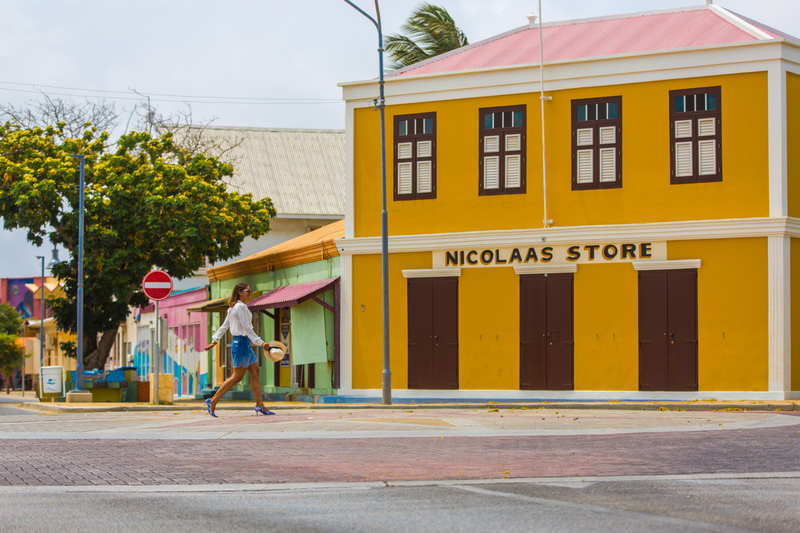
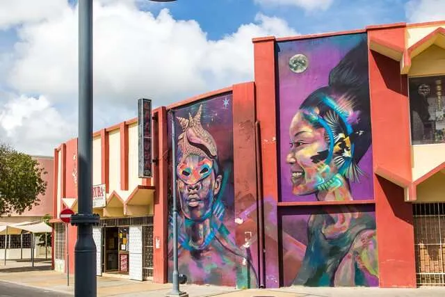
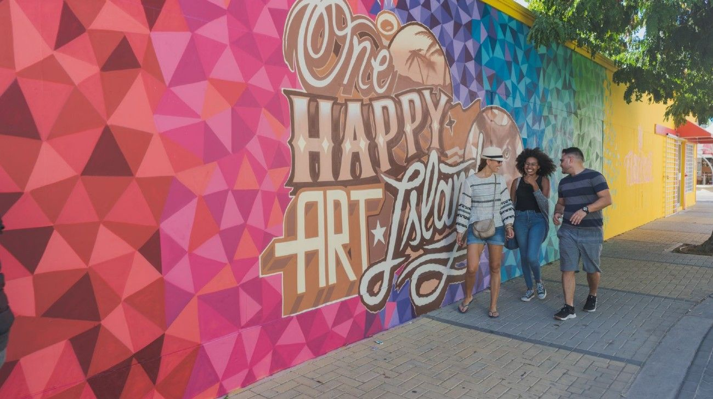
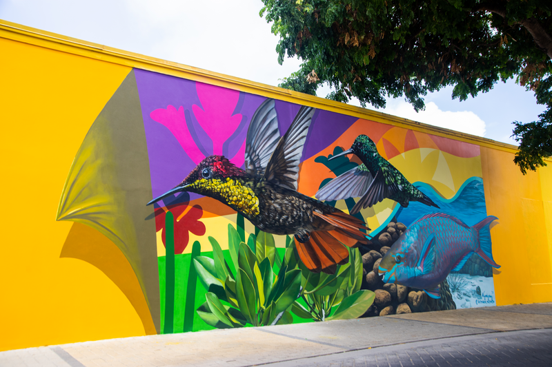

San Nicolás, el barrio artístico de Aruba
Queda en la parte sur de la isla, es una ciudad muy calma y tranquila con alrededor de 18,000 habitantes, el nombre varia un poco entre San Nicolás o San Nicolaas o Sint Nicolaas
Es un pueblito que vivía de una empresa petrolera y, cuando ésta cerró sus puertas, se tuvo que transformar.
La ciudad es perfecta para ver otra cara de Aruba, lejos de los resorts de lujo, San nicolás es muy tradicional, sencilla y acogedora. Aunque no posee grandes hoteles, si encontrarás hospedaje en posadas, pequeños apartamentos y habitaciones de casas. es recomendable que rentes un auto para movilizarte ya que las playas de la ciudad se encuentran a unos 7 kilometros del casco urbano
Tambien Es un museo a cielo abierto con obras de artistas provenientes de distintas partes del mundo.Una movida artística la convirtió en un centro de arte increíble con Más de 60 murales
  